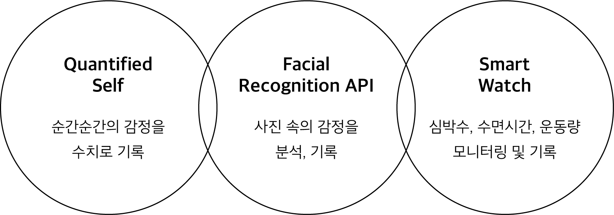
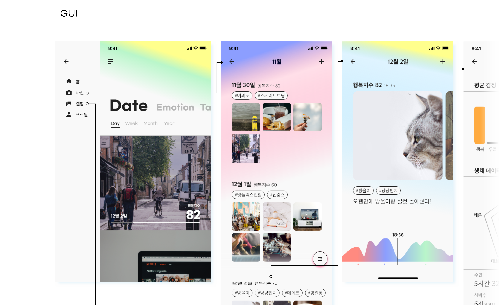
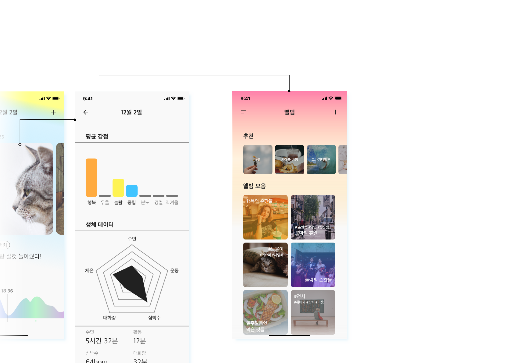

sen·ti·ment
Oct 2018 - Nov 2018
Team Project (2 people)
Service Ideation, GUI, Prototyping

sen·ti·ment is a service that analyzes and records users' feelings through photos and smartwatches.
Considering the characteristics of the MZ generation, which takes pictures and records their daily lives,
the photos are categorized according to the date they were taken, and users can add hashtags or notes obtained by analyzing the photos to make simple records.
In addition, sen·ti·ment analyzes the user's face in the picture to quantify the emotions of the moment, and creates a
"sentiment graph" by adding it to the heart rate data collected with a smartwatch.
Users can see how they felt at the time through the mood graph linked to the collection of photos.
You can also monitor your own condition by clicking on the photo because you can see how much sleep, conversation, and exercise you've had for the day.
And you can collect these photos to make and recommend albums, or you can create your own albums with specific keywords or emotions to find your own specific moments.

